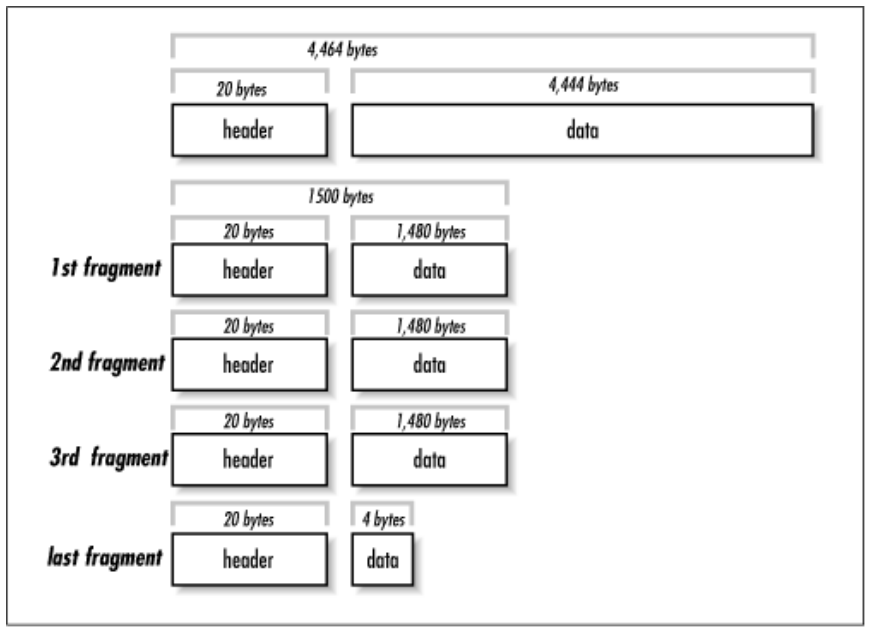

Representação de dados
O desenvolvimento de sistemas distribuídos usando diretamente Sockets como forma de comunicação entre componentes não é para os fracos de coração. Sua grande vantagem está no acesso baixo nível à rede, e todo o ganho de desempenho que isso pode trazer. Suas desvantagens, entretanto, são várias:
- interface de "arquivo" para se ler e escrever bytes;
- controle de fluxo de "objetos" é por conta da aplicação, isto é, a aplicação precisa sinalizar quantos bytes serão escritos de um lado, para que o outro saiba quanto ler para obter um "objeto" correto;
- logo, a serialização e desserialização de objetos é também por conta da aplicação;
- tratamento de desconexões e eventuais reconexões também é gerenciado pela aplicação e nem a tão famosa confiabilidade do TCP ajuda.
Enquanto se poderia argumentar que algumas destas desvantagens podem ser descartadas em função da discussão de incluir ou não API na comunicação fim-a-fim, é certo que algumas funcionalidades são ubíquas em aplicações distribuídas. Foquemo-nos agora na necessidade de representar dados complexos em formato inteligível pelos vários componentes da aplicação distribuída.
Exceto por aplicações muito simples, processos em um sistema distribuído trocam dados complexos, por exemplo estruturas ou classes com diversos campos, incluindo valores numéricos de diversos tipos, strings e vetores de bytes, com diversos níveis de aninhamento e somando vários KB. Neste cenário, vários fatores precisam ser levados em consideração na hora de colocar esta estrutura no fio, como:
- variações de definições de tipos, por exemplo,
inteiro: 8: 16, 32, ou 64 bits? - variações na representação de dados complexos: classe x estrutura
- conjunto de caracteres diferentes: ASCII x UTF
- little endian, como x64 e IA-32, ou big endian como SPARC (< V9), Motorola e PowerPC? ou ainda, flexível como ARM, MIPS ou IA-64?
- fim de linha com crlf (DOS) x lf (Unix)?
- fragmentação de dados na rede

Representação Textual
Uma abordagem comumente usada é a representação em formato textual "amigável a humanos". Veja o exemplo de como o protocolo HTTP requisita e recebe uma página HTML.
1 2 3 4 5 6 7 | |
Em resposta a esta requisição, o servidor envia o seguinte, em que as primeiras linhas trazem metadados da página requisitada e, após a linha em branco, vem a resposta em HTML à requisição.
1 2 3 4 5 6 7 8 9 10 11 12 13 14 15 16 17 18 | |
Representações textuais são usadas em diversos protocolos como SMTP, POP, e telnet. Algumas destas representações seguem padrões formalizados, o que facilita a geração e interpretação dos dados. Dois padrões bem conhecidas são XML e JSON.
XML é o acrônimo para Extensible Markup Language, ou seja, uma linguagem marcação que pode ser estendida para representar diferentes tipos de informação. A HTML, por exemplo, é uma instância de XML destinada à representação de hipertexto (A bem da verdade, XML foi uma generalização de HTML).
Por exemplo, para representarmos os dados relativos à uma pessoa, podemos ter uma instância XML assim:
1 2 3 4 5 6 7 8 9 | |
Uma das grandes vantagens do uso de XML é a possibilidade de se formalizar o que pode ou não estar em um arquivo para um certo domínio utilizando um XML Domain Object Model. Há, por exemplo, modelos para representação de documentos de texto, governos eletrônicos, representação de conhecimento, etc. Sua maior desvantagem é que é muito verborrágico e por vezes complicado de se usar, abrindo alas para o seu mais famoso concorrente, JSON.
JSON é o acrônimo de Javascript Object Notation, isto é, o formato para representação de objetos da linguagem Javascript. Devido à sua simplicidade e versatilidade, entretanto, foi adotado como forma de representação de dados em sistemas desenvolvidos nas mais diferentes linguagens. O mesmo exemplo visto anteriormente, em XML, é representado em JSON assim:
1 2 3 4 5 6 7 8 9 | |
Em Python, por exemplo, JSON são gerados e interpretados nativamente, sem a necessidade de frameworks externos, facilitando seu uso. Mas de fato, a opção final por XML ou JSON é questão de preferência, uma vez que os dois formatos são, de fato, equivalentes na questão da representação de informação.
Outros formatos, binários, oferecem vantagens no uso de espaço para armazenar e transmitir dados, e por isso são frequentemente usados como forma de serialização de dados em sistemas distribuídos, isto é, na transformação de TAD para sequências de bytes que seguirão "no fio".
- ASN.1 (Abstract Syntax Notation), pela ISO
- XDR (eXternal Data Representation)
- Java serialization
- Google Protocol Buffers
- Thrift
ASN.1 e XDR são de interesse histórico, mas não os discutiremos aqui.
Quanto à serialização feita nativamente pelo Java, por meio de ObjectOutputStreams, como neste exemplo, embora seja tentadora para quem usa Java, é necessário saber que ela é restrita à JVM e que usa muito espaço, embora minimize riscos de uma desserialização para uma classe diferente.
Nos foquemos nas outras alternativas listadas, protobuf e Thrift, que podem levar a representações binárias e textuais.
Protocol Buffers
Nas palavras dos criadores,
Protocol buffers are a language-neutral, platform-neutral extensible mechanism for serializing structured data.
Por meio de protobuf, é possível estruturar dados e gerar o código correspondente em diversas linguagens, for forma compartilhável entre as mesmas. Veja o exemplo a seguir, que especifica os dados referentes a uma pessoa. Observe a presença de campos de preenchimento opcional (optional), de enumerações (enum), e de coleções (repeated).
1 2 3 4 5 6 7 8 9 10 11 12 13 14 15 | |
Além dos tipos usados no exemplo, diversos outros tipos primitivos estão disponíveis:
bool: boolean (true/false)double: 64-bit; ponto-flutuantefloat: 32-bit; ponto-flutuantei32: 32-bit; inteiro sinalizadoi64: 64-bit; inteiro sinalizadosiXX: signeduiXX: unsignedsfixedXX: codificação de tamanho fixobytes: 8-bit; inteiro sinalizadostring: string UTF-8 ou ASCII 7-bit
Além destes, também pode ser usado um tipo indefinido e adaptável, Any, bem como coleções.
A especificação protobuf pode ser traduzida para múltiplas linguagens
Por exemplo, se a tradução for feita para C++, o tipo message resulta em uma classe de mesmo nome, com funcionalidades para serialização e desserialização do objeto, como no exemplo a seguir.
1 2 3 4 5 6 7 8 9 10 11 12 13 14 | |
De acordo com benchmarks do próprio projeto, a operação em XML seria mais ordens de grandeza mais lenta e ocuparia mais espaço.
When this message is encoded to the protocol buffer binary format, it would probably be 28 bytes long and take around 100-200 nanoseconds to parse. The XML version is at least 69 bytes if you remove whitespace, and would take around 5,000-10,000 nanoseconds to parse.
Thrift
Originalmente desenvolvido pela Facebook, Apache Thrift é um arcabouço desenvolvimento de serviços multi-linguagens. Isto, mesmo que por enquanto nos foquemos no aspecto da representação de dados desta tecnologia, veremos depois que pode ser usado para executar a troca de dados entre processos.1 Comparado ao protobuf, ele possui praticamente as mesmas funcionalidades, i.e., a definição de estruturas de dados complexos e geração de código para serialização e desserialização de instâncias destas estruturas. O mesmo exemplo acima, que define uma estrutura para representar pessoas e seus contatos, ficaria assim em thrift.
1 2 3 4 5 6 7 8 9 10 11 12 13 14 15 16 17 18 19 20 21 22 | |
Usar a classe correspondente em Java, depois da geração de código pelo compilador thriftc, é bem simples.
1 | |
Observe que além do uso de coleções e enumerações, demonstradas no exemplo, os mesmos tipos básicos também estão disponíveis.
- bool: boolean (true/false)
- byte: 8-bit; inteiro sinalizado
- i16: 16-bit; inteiro sinalizado
- i32: 32-bit; inteiro sinalizado
- i64: 64-bit; inteiro sinalizado
- double: 64-bit; ponto-flutuante
- string: string UTF-8
- binary: sequência de bytes
- coleções: List, Map, Set
Uma vez que tenhamos facilidades para representar dados complexos e transformá-los em sequências de bytes, e de volta, pensemos em como podemos definir, de forma simplificada, serviços que manipulam estes dados. Estas funcionalidades são normalmente implementadas por frameworks de comunicação de mais alto nível que, jargão da área de sistemas distribuídos, são denominados middleware.